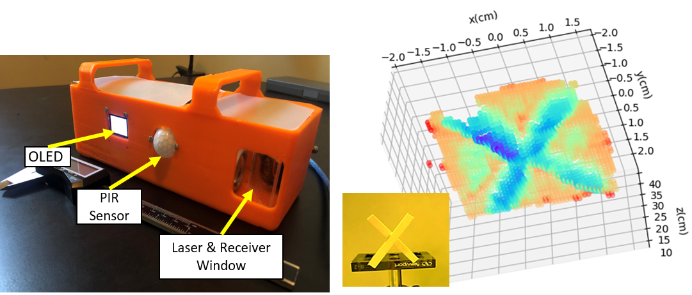
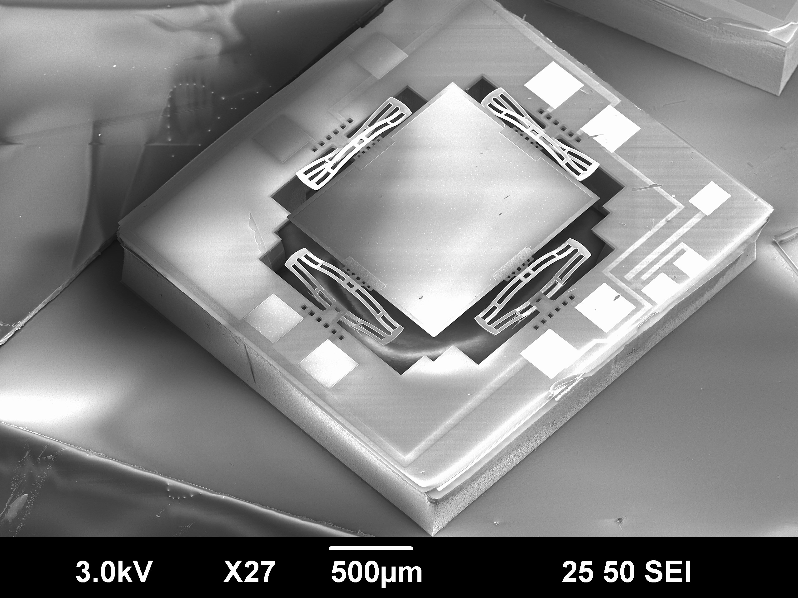
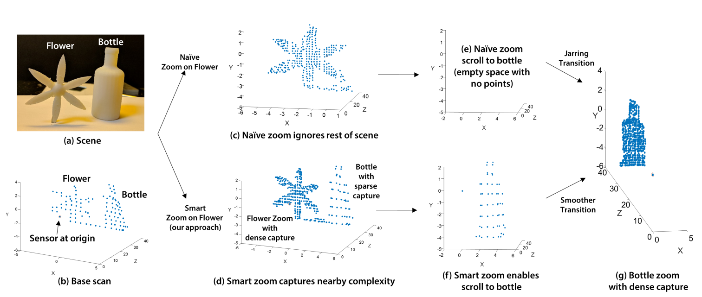

Dingkang Wang
Ph.D. Candidate
University of Florida
Research Area
MEMS LiDAR
Home
Research
CV
Work
SocialContact:
FOCUS Lab
IMG
BML
University of Florida
136 Larsen Hall,
Gainesville, Florida 32603
Hosted on GitHub Pages — Theme by orderedlist
Published & Forthcoming Papers
Motion Compensated LIDAR Scanning for Small Robots
ICRA 2021, Under review.
Microrobots experience significant egomotion due to high-frequency actuation and their susceptibility to external forces such as wind. This affects onboard sensors and any control that depends on that sensing. We present a novel microelectromechanical (MEMS) mirror LiDAR system for small robots where the motion of the robot is compensated, in hardware.
Jump to: experiment result---point cloud stitching results---AirSim simulation
Media coverage:
IEEE SPECTRUM, 2020
A Low-voltage, Low-current, Digital-driven MEMS Mirror for Low-power LiDAR
IEEE Sensors Letters, (July 2020).
We propose a new MEMS mirror design and its actuation method that is specifically built for low-voltage, low-current, and digital-driven IoT applications. The MEMS mirror specifically designed with direct actuation from the microcontroller was successfully fabricated and characterized. A full low-power LiDAR system based on the fabricated MEMS mirror was demonstrated, which was powered by a 9-V commercial battery. The electrothermal MEMS mirror can be powered by a lemon battery.



Adaptive fovea for scanning depth sensors
The International Journal of Robotics Research, (May 2020).
We build a scanning depth sensor which can control its angular resolution over the FOV. This opens up new directions for robotics research, since many algorithms in localization, mapping, exploration, and manipulation make implicit assumptions about the fixed resolution of a depth sensor, impacting latency, energy efficiency and accuracy. Our algorithms increase resolution in ROIs either through deconvolutions or intelligent sample distribution across the FOV. The areas of high resolution in the sensor FOV act as artificial fovea and we adaptively vary the fovea locations to maximize a well-known information theoretic measure. We demonstrate novel applications such as adaptive TOF sensing, LIDAR zoom, gradient-based LIDAR sensing and energy efficient LIDAR scanning. As a proof-of-concept, we mount the sensor on a ground robot platform, showing how to reduce robot motion to obtain a desired scanning resolution. We also present a ROS wrapper for active simulation for our novel sensor in Gazebo.
Smart LIDAR zoom:

{kind=link}
MEMS Mirrors for LiDAR: A review
Micromachines, (May 2020).
This review presents an extensive overview of Microelectronechanical Systems (MEMS) scanning mirrors specifically for applications in LiDAR systems. MEMS mirror-based laser scanners have unrivalled advantages in terms of size, speed and cost over other types of laser scanners, making them ideal for LiDAR in a wide range of applications. A figure of merit (FoM) is defined for MEMS mirrors in LiDAR scanners in terms of aperture size, field of view (FoV) and resonant frequency.

A Silicon Optical Bench with Vertically-oriented Micromirrors for Active Beam Steering
Sensors and Actuators A: Physical, (September 2019).
This paper reports a Silicon Optical Bench (SiOB) integrated with two vertically-oriented tip-tilt micromirrors that can perform active beam steering. This MEMS scanner has potential applications in miniature LiDAR for Micro Air Vehicles (MAVs).

A Compact Omnidirectional Laser Scanner Based on An Electrothermal Tripod MEMS Mirror For LiDAR
TRANSDUCERS & EUROSENSORS XXXIII, (June 2019).
This paper reports a compact omnidirectional scanner based on an electrothermal MEMS mirror, in which a circular pattern is generated by a two-axis tripod electrothermal MEMS mirror at non-resonant mode combined with a cone mirror.


Directionally controlled time-of-flight ranging for mobile sensing platforms
Robotics: Science and Systems, (June 2018).
We demonstrate that control of the directional scanning patterns can enable novel algorithms and applications. Our analysis occurs entirely in the angular domain and consists of two ideas. First, we show how to exploit the angular support of the light beam to improve reconstruction results. Second, we describe how to control the light beam direction in a way that maximizes a well-known information theoretic measure. Using these two ideas, we demonstrate novel applications such as adaptive TOF sensing, LIDAR zoom, LIDAR edge sensing for gradient-based reconstruction and energy efficient LIDAR scanning. Our contributions can apply equally to sensors using mechanical, opto-electronic or MEMS-based approaches to modulate the light beam, and we show results here on a MEMS mirror-based LIDAR system.
An Integrated Forward-view 2-axis MEMS Scanner for Compact 3D LiDAR
IEEE NEMS, (April 2018).
BEST STUDENTS PAPER AWARD
This paper reports an integrated forward-view 2-axis MEMS scanner that enables ultrasmall 3D LiDAR for applications in micro-air vehicles (MAV). The MEMS scanner has a small size of 3 mm and weight under 20 mg.